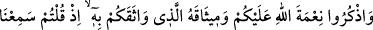
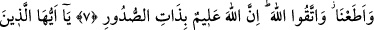
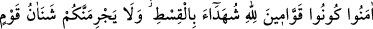
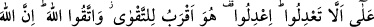
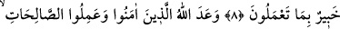
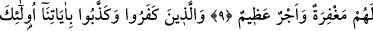
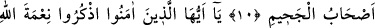
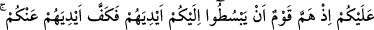
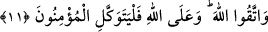

ADALETLİ OLMAK
7- Allah’ın size olan nîmetini, ve O’na verdiğiniz sözü hatırlayın: Hani “İşittik ve
itâat ettik” demiştiniz. Allah’tan korkun. Şüphesiz Allah, kalblerin içindekini
bilmektedir.
8- Ey îman edenler! Allah için hakkı ayakta tutan, adâletle şâhitlik eden kimseler
olun. Bir topluluğa duyduğunuz kin, sizi adâletten saptırmasın. Adâletli olun; bu,
takvâya daha yakın (bir davranış) dır. Allah’a isyandan sakının. Allah yaptıklarınızı
hakkıyle bilmektedir.
9- Allah, îman eden ve iyi şeyler yapanlara söz vermiştir, onlara bağışlama ve
büyük mükâfât vardır.
10- İnkâr eden ve âyetlerimizi yalanlayanlara gelince onlar cehennemliklerdir.
11- Ey îman edenler! Allah’ın size olan nîmetini hatırlayın; hani bir topluluk size
el uzatmaya yeltenmişti de Allah, onların ellerini sizden çekmişti. Allah’tan korkun
ve mü’minler yalnızca Allah’a güvensinler.
“Allah’ın size olan” İslâm “nîmetini” anın. Bu size, nîmet vereni hatırlatır ve ona
şükre teşvik eder. Denirse ki: İslâm nîmetinin hatırlanması daha önce unutulduğunu îmâ
ediyor. Devamlı ve sürekli olarak İslâmî görevleri yerine getirmekle meşgul olan
müslümanın, Allah’ın bu nîmetini unutması nasıl düşünülebilir? Buna şöyle cevap
veririz:
Vazîfelere devamlılık zamanla onları tabiî ve mûtad hâle getirir. Bu da onun ilâhî bir
nîmet olduğunu unutturur da bu vazifelere mizâcının gereği olarak devâm eder. Böylece